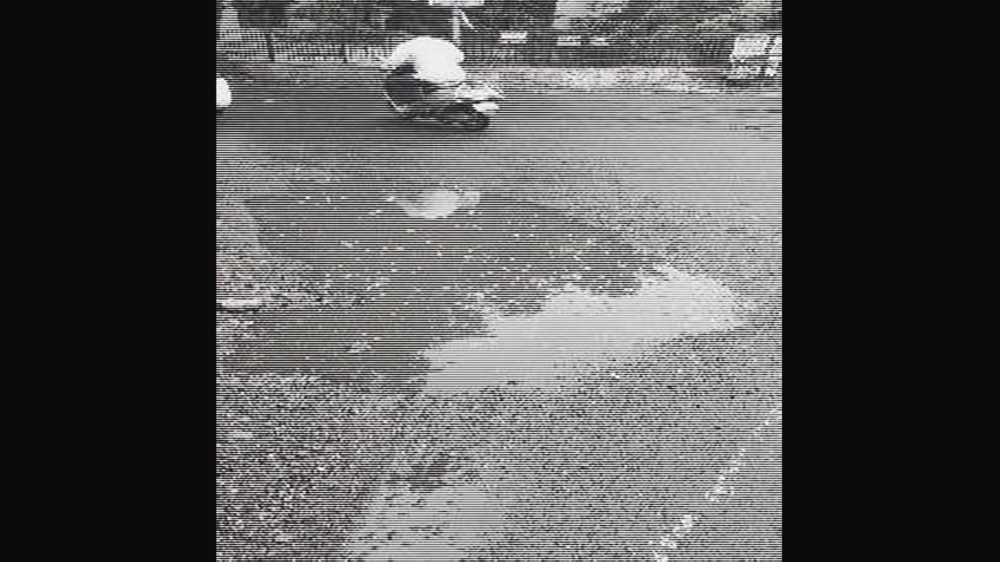

Stagnant Water Detection
A system that makes use of CNN network to detect stagnant water instances.
To create an application that can make use of public security camera infrastructure to detect stagnant water in public places and hence help respective authorities to take appropriate decisions
Stagnant water detection, Alert Scheduling
The System makes use of a version of RCNN called Masked R-CNN. The system is trained with over 2000+ images of stagnant water instances.
The system needed the images to have bounding boxes marked in COCOMO format, hence we used a third party website to mark all images manually.
The markings just included one class called "water" for boxes indicating water.
The algorithm was trained with the help of Google Collab platform till 5 epochs. The output file was used for testing and then final excutions of the project.
To demonstrate and test videos from a CCTV camera perspective, we added filters to images and then used them for execution.

Image with CCTV filter
The system also uses a simple frontend website made in HTML + CSS. The backend system, once done with image processing sends all needed data to the website server, where all images are stored in a dedicated folder and other information in stored in a JSON file.
The website uses the same JSON file to display report for a particulat CCTV camera for a particular day, using which reponsible authorities can take actions.
The main issue faced was the need of images to be a specific format (COCOMO) and hence the manual labelling of the images.
The next basic challenge was computing power in order to perform the needed processing. But we used Google Collab for training and some other roundabouts for some other computing heavy tasks.
The App provides an easy and clean interface for authorities to view reports of various regions and take necessary actions.